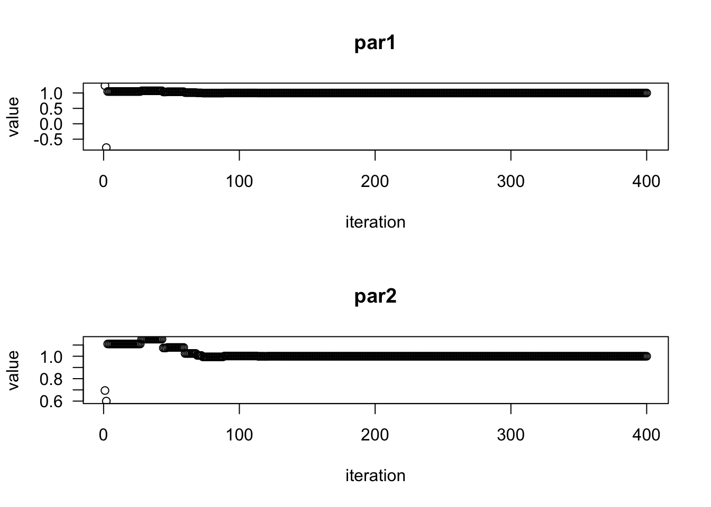

Libraries
library(CVXR)
library(tidyverse)
library(Matrix)
library(DEoptim)library(CVXR)
library(tidyverse)
library(Matrix)
library(DEoptim)A convex optimization problem has the form:
\begin{aligned} \min \quad & f_0(x) \\ \text{s.t.} \quad & f_i (x) \leq 0\qquad i = 1 \dots n \\ &a_i^Tx = b_i \qquad i = 1 \dots p \end{aligned}
Some useful compositions that are preserve convexity
Notable counter examples, if f_1, f_2 are convex,
A program for principled convex optimization
Betahat <- Variable(p) where p is the length of the vectorobjective <- Minimize(...))Minimize(...)Maximize(...)Useful functions for debugging the program
is_dcp(problem) - check if problem follows the DCP rulesis_dgp(problem) - check if problem follows geometric programming rules# Tutorial
set.seed(123)
n <- 100
p <- 10
beta <- -4:5 # beta is just -4 through 5.
X <- matrix(rnorm(n * p), nrow=n)
colnames(X) <- paste0("beta_", beta)
Y <- X %*% beta + rnorm(n)betahat <- Variable(p)
objective <- Minimize(sum((Y-X %*% betahat)^2))
problem <- Problem(objective,
constraints = list(betahat >= 0)) # list constraints, betahat >= 0
result <- solve(problem)result$getValue(betahat) %>% zapsmall() [,1]
[1,] 0.000000
[2,] 0.000000
[3,] 0.000000
[4,] 0.000000
[5,] 1.237449
[6,] 0.623466
[7,] 2.123066
[8,] 2.803564
[9,] 4.444802
[10,] 5.207352Let A \in \mathbb{R}^{pxp} be a symmetric, nonegative matrix. Then our target value is:
set.seed(1)
# Symmetric Matrix
p <- 10 # matrix is p x p
A <- matrix(abs(rnorm(p^2)), ncol = p) # non negative matrix
sA <- forceSymmetric(A, uplo = "U") %>% as.matrix()
sA_eig <- eigen(sA)
sA_eig$values[1] # largest eigenvalue[1] 7.649905We show 3 ways to use CVXR to solve for the largest eigenvalue, starting with the simplest
# w/ CVXR
# using objective
X <- Variable(p,p, pos = TRUE)
objective <- Minimize(pf_eigenvalue(X))
constraints <- list(X == sA)
problem <- Problem(objective, constraints)
results <- solve(problem, gp = TRUE)
c(results$value, sA_eig$values[1])[1] 7.649905 7.649905# w/ CVXR
# spectral radius w/ geometric rules, A is known
lambda <- Variable(1, name = "lambda", pos = TRUE)
u <- Variable(p, pos = TRUE)
objective <- Minimize(lambda)
constraints <- list()
for (i in 1:p) {
constraints <- c(constraints, sA[i,, drop = F] %*% u / (lambda * u[i]) <= 1)
}
problem <- Problem(objective,constraints)
results <- solve(problem, gp = TRUE)
c(results$getValue(lambda), sA_eig$values[1]) # the same[1] 7.649905 7.649905In order to transform the geometric program of minimizing largest eigenvalue, we note that the inequalities can be written
\begin{aligned} \frac{\sum_j A_{ij}u_j}{\lambda u_i} &\leq 1 \qquad \text{for } i = 1 \dots n \\ \log(\sum_j \exp(u_j + \log(A_{ij}) - \log(\lambda) - u_i)) & \leq 0 \end{aligned}
# w/ CVXR
# manually transforming geometric to convex program
lambda <- Variable(1, name = "lambda", pos = TRUE)
u <- Variable(p, pos = TRUE)
objective <- Minimize(lambda)
constraints <- list()
for ( i in 1:p) {
constraints <- c(constraints,
log_sum_exp(u + log(sA[i,]) - log(lambda) - u[i]) <= 0)
}
problem <- Problem(objective, constraints)
results <- solve(problem)
# sum(vec + vec - scalar - scalar)
# curvature(log_sum_exp(u + log(sA[1,]) - log(lambda) - u[1]))
c(results$getValue(lambda), sA_eig$values[1]) # the same! nice![1] 7.649905 7.649905In addition to just finding the maximum eigenvalue (spectral radius) of a fixed matrix, we can also let the matrix be an optimization variable and minimize the spectral radius of the matrix! Thus, if entries of the matrix A(x) are a function of x, and we have some constraints f(x) \leq 1, we can figure out those entries.
Differential Evolution Optimization, this is a derivative free way of optimization, and seems to work quite well, at least for rosenbrock function!
# Rosenbrock Function for optimization
# global minimum f(x) = 0, at x = (1, 1).
Rosenbrock <- function(x){
x1 <- x[1]
x2 <- x[2]
100 * (x2 - x1^2)^2 + (1 - x1)^2
}
# specify the grid for replicability
lower <- c(-10,-10)
upper <- -lower
# Optimize over space
set.seed(1234)
DEoptim(Rosenbrock, lower, upper) # basic invocation
# invocation with control aspects
outDEoptim <- DEoptim(Rosenbrock,
lower,
upper,
DEoptim.control(NP = 80,
itermax = 400, # number of procedure iterations
F = 1.2,
CR = 0.7)) outDEoptim$optim$bestmem # the final parameters
outDEoptim$optim$bestval # the final value
sprintf("The found parameters are %.2f %.2f\n The minimum objective is: %.2f\n DEoptim did %.2f iterations.",
outDEoptim$optim$bestmem[[1]], outDEoptim$optim$bestmem[[2]], # parameters
outDEoptim$optim$bestval, # final value
outDEoptim$optim$iter) # final value
plot(outDEoptim)

par1 par2
1 1
[1] 3.78756e-25
[1] "The found parameters are 1.00 1.00\n The minimum objective is: 0.00\n DEoptim did 400.00 iterations."